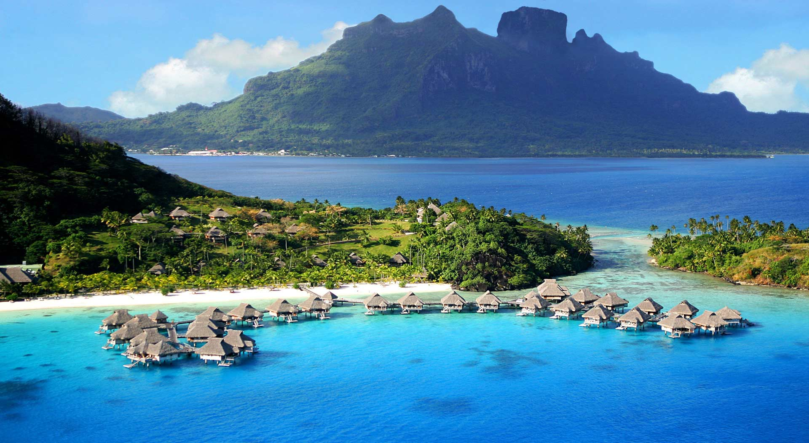
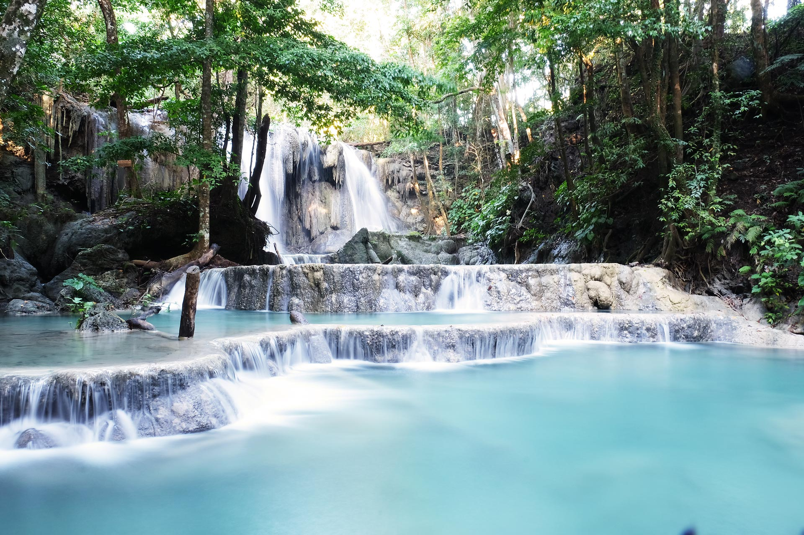

Post by dayat, Sunday 06 Juny 2018
Pulau Moyo berada di wilayah Kabupaten Sumbawa, Nusa Tenggara Barat (NTB), Indonesia. Jaraknya sekitar dua setengah kilometer sebelah utara dari Pulau Sumbawa, NTB. Pulau ini menjadi tujuan tempat wisata bagi wisatawan domestik maupun mancanegara. Bahkan Mick Jagger dan Putri Diana pernah berkunjung ke tempat ini. Pulau ini terkenal dengan keindahan alamnya. Selain masih alami dan sepi, suasana di pulau ini memberikan nuansa ketenangan.
Keindahan Pulau Moyo tidak diragukan lagi. Di sini terdapat berbagai jenis flora dan fauna seperti kupu-kupu, dua puluh satu jenis kelelawar, babi liar, rusa, ular, berbagai macam jenis burung dan hewan-hewan lainnya. Hal ini menandakan bahwa Pulau Moyo terjaga kelestariannya. Selain bisa menikmati keindahan hutannya, Anda juga bisa menikmati keindahan alam bawah lautnya yang tentunya masih sangat indah.
Bagi pecinta alam maupun burung, Pulau Moyo adalah surga tersendiri. Dari 124 jenis burung yang ada di Sumbawa, 84 jenis diantaranya ada di sini. Beberapa spesies langka seperti kakak tua berkepala kuning dan burung gosong dapat Anda temukan di pulau ini. Bagi pecinta hiking, Anda akan menemukan air terjun, gua, serta sungai yang bisa Anda susuri. Dan untuk yang hobi bersnorkeling ataupun diving, di sini terdapat spot-spot bawah laut yang indah. Anda akan menemukan spon, anemon, belut, pelagik, manta, sekelompok ikan terbang sampai hiu kecil yang sedang berenang.
Di pulau ini Anda bisa menginap di Amanwana Resort (satu-satunya resort sekelas hotel bintang lima di Pulau Moyo) dengan biaya yang cukup mahal yakni sekitar $800 per malam. Pilihan lainnya, Anda bisa mendapatkan beberapa tempat untuk menginap di rumah penduduk Desa Labuan Aji dengan biaya sesuai kesepakatan atau sekitar Rp 150.000 hingga Rp 200.000 per malam. Atau bila mau, bisa juga membawa tenda sendiri beserta perlengkapan tidur seperti sleeping bag, dengan begitu tentunya akan lebih menghemat keuangan Anda.
Bila Anda dari Mataram, Pulau Lombok, NTB, Anda bisa menggunakan kendaraan darat dengan rute dari Mataram langsung menuju ke Pelabuhan Kayangan. Dari pelabuhan dilanjutkan ke Poto Tano (dengan kapal fery). Dari Poto Tano bisa langsung menuju ke Sumbawa Besar (dengan kendaraan darat). Total waktu tempuhnya sekitar enam jam perjalanan.
Anda bisa juga menggunakan jalur udara yakni dari Bandara Internasional Lombok menuju ke Bandara Sultan Kaharuddin, Sumbawa dengan menggunakan pesawat berjenis Fokker.
Dari Sumbawa perjalanan dilanjutkan menuju ke Pelabuhan Muara Kali. Dari pelabuhan ini, Anda bisa meggunakan kapal rakyat dengan biaya sekitar Rp 20.000 hingga Rp 25.000 per orang. Kapal ini berangkat ke Pulau Moyo sekitar pukul 11.30 waktu setempat dengan waktu tempuh sekitar dua jam perjalanan. Kapal ini akan berangkat ke Sumbawa lagi sekitar pukul 09.00 waktu setempat. Bila Anda mau menggunakan kapal rakyat ini lagi maka Anda harus menginap. Pilihan lainnya, Anda bisa menggunakan perahu motor milik nelayan dengan biaya sekitar Rp 400.000 hingga Rp 600.000 atau sesuai kesepakatan (bila tidak menginap dan ingin kembali ke Sumbawa di hari yang sama).
Jika ingin lebih cepat, Anda dapat menyewa kapal cepat milik swasta dengan biaya lebih mahal yaitu sekitar Rp 3.000.000 (pp). Kelebihannya, selain waktu tempuhnya lebih cepat kapal tersebut dapat mengelilingi Pulau Moyo seharian penuh.
Pilihan akses ke Pulau Moyo lainnya adalah melalui Ai Bari yang terletak sekitar 20 km dari Sumbawa Besar. Dari Ai Bari, Anda bisa menggunakan speed boat dengan waktu tempuh sekitar 20 menit atau dengan kapal ketinting dengan waktu yang lebih lama tentunya.
Sumber : https://utiket.com/id/obyek-wisata/sumbawa/72-pulau_moyo_surganya_pecinta_al.html
Pulau Kenawa
Pulau Kelapa
Air Terjun Tiu Kelep
Air Terjun Oi Marai
Gili Trawangan